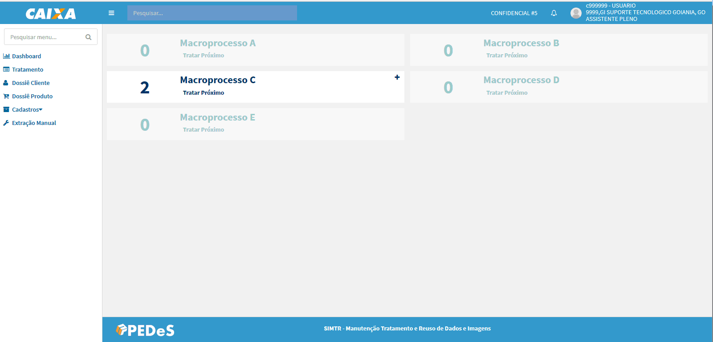
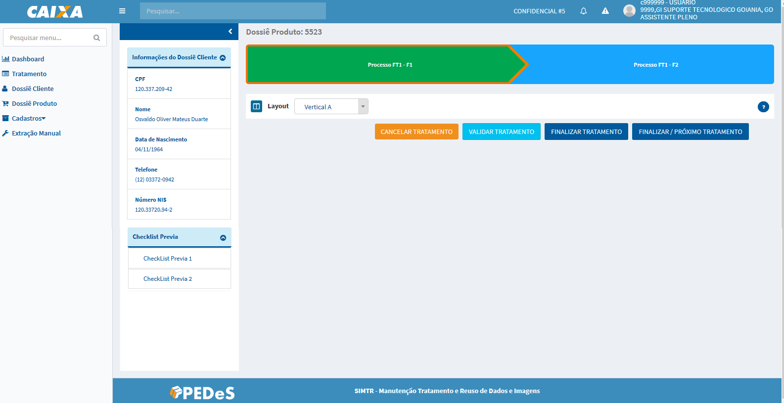
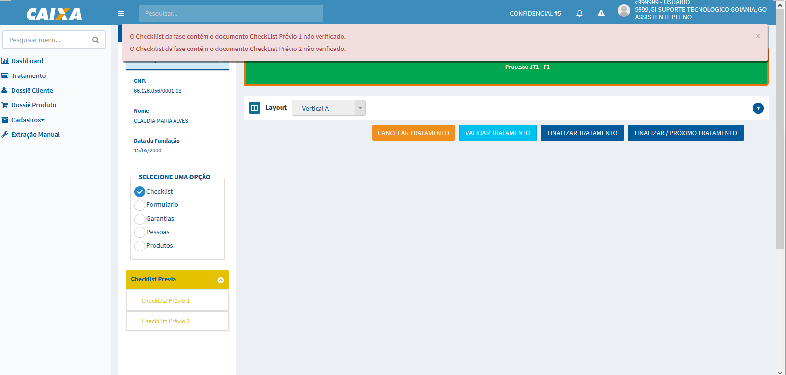
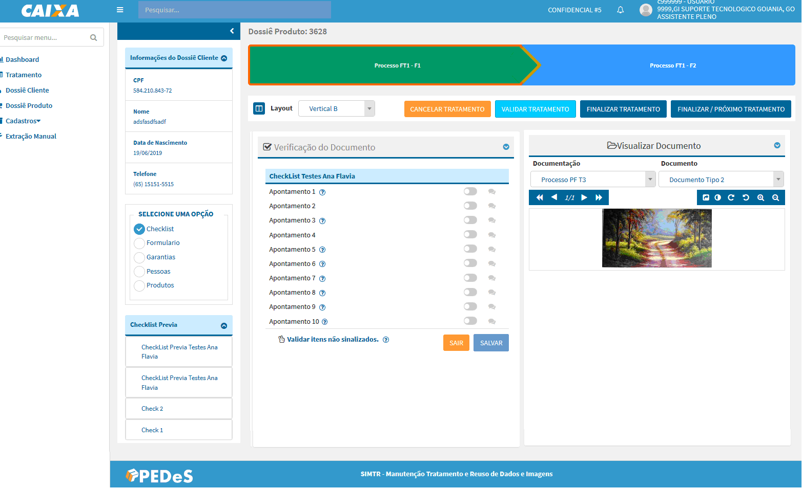
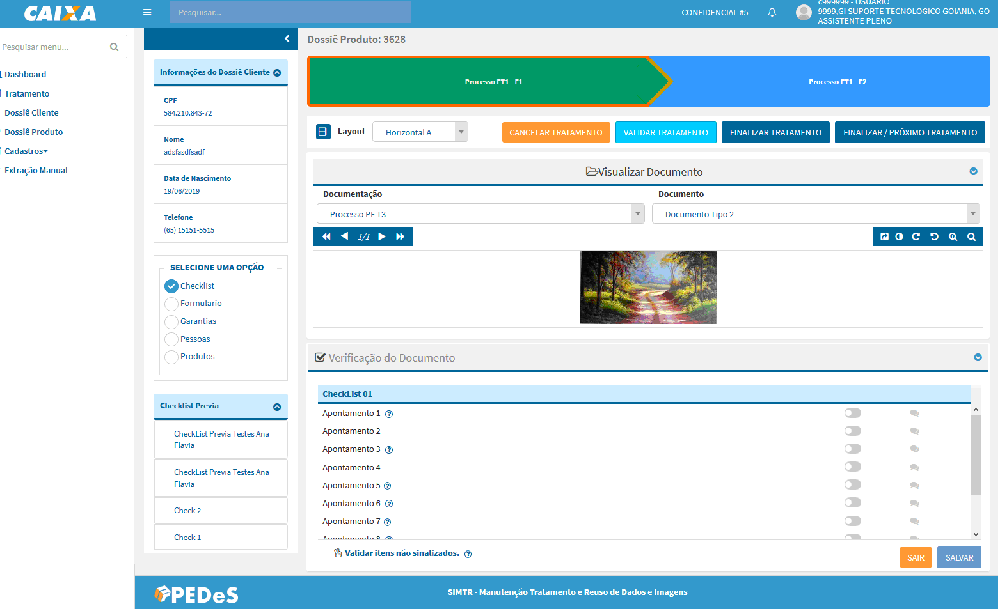
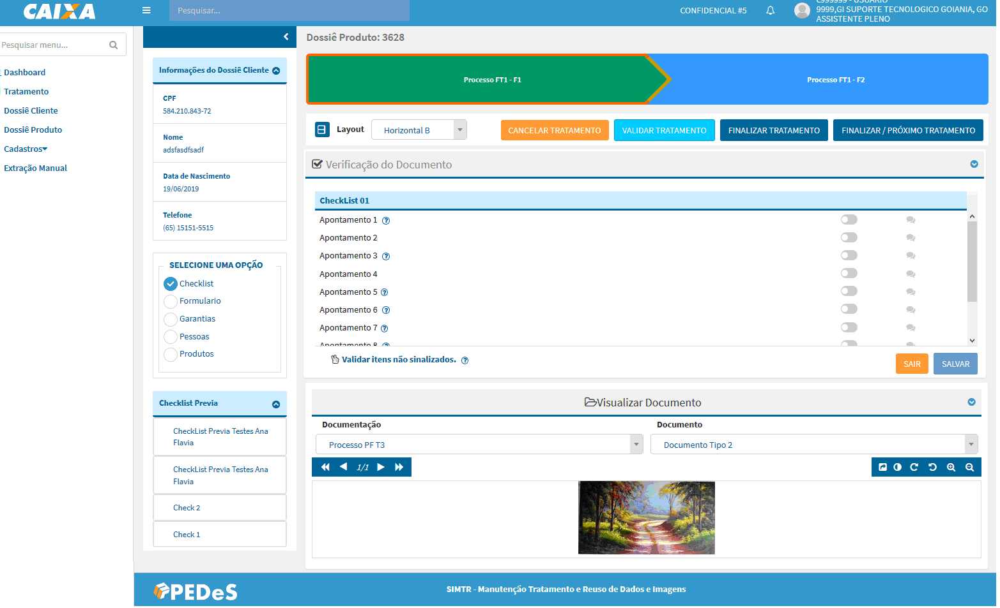

Tratamento Dossiê Produto
Perfis
Funcionalidade acessada pelos seguintes perfis:
MTRADM
MTRSDNTTG
MTRSDNTTO
OBS: Solicitação de acesso via https://novoacessologico.caixa, selecionando o sistema SIMTR e, em seguida, os perfis desejados.
Ao acionar a opção referente no menu da lateral é apresentada a tela:

O sistema apresenta a tela com os Dossiês Produto, que estão na situação Aguardando Tratamento, agrupados pelo processo em ordem alfabética, cuja unidade responsável por realizar o tratamento seja a unidade de lotação do usuário autenticado.
OBS: os processos que não apresentarem dossiês produto para tratamento são apresentados desabilitado.
Para cada processo é apresentado o Total de dossiês produtos aguardando tratamento. Abaixo segue descrições das opções apresentadas:
- essa opção expande a visualização dos dossiês a nível de processos gerador de dossiê;
- essa opção recolhe a expansão do nível de processos gerador de dossiê para visualização padrão;
- Tratar Próximo - opção apresentada tanto na visão processo como dos processos gerador de dossiê que quando acionada apresenta a tela de tratamento:

Código dossiê produto - informação apresentada no canto superior esquerdo da tela que representa o código de identificaçãodo do dossiê produto que está em tratamento. Apartir desse código é possível realizar consultas do dossiê produto no sistema.
Etapas do dossiê produto - apresenta as etapas definidas para o processo, segue a legenda:
Verde - representa a etapa atual do dossiê produto, objeto de tratamento;
Azul - representa a(s) próxima(s) etapa(s) do dossiê produto, não é(são) objeto(s) de tratamento, essa(s) etapa(s) o sistema permite apenas a navegação dessa(s) etapa(s) com intuito de informação, nenhuma alteração é permitida.
Azul - representa a(s) etapa(s) anterior(es) do dossiê produto, que já foi(ram) objeto(s) de tratamento, o sistema permite a navegação da(s) etapa(s) com intuito de informação, nenhuma alteração é permitida.
- essa opção permite recolher as informações do dossiê cliente as demais informações da lateral para aumentar o campo de tratamento dos documentos:
Informações do Dossiê Cliente - apresenta os dados do dossiê cliente responsável pelo dossiê produto
Selecione uma opção:
Checklist - a tela de tratamento é carregada com essa opção selecionada, com apresentação do(s) checklist(s) prévio, da fase e dos vínculos (pessoas, produtos e garantias) para tratamento dos documentos submetidos conforme definição do processo;
Formulário - apresenta as perguntas e respostas preenchidas para o processo na manutenção do dossiê produto.;
Garantias - apresenta o(s) vínculo(s) de garantia(s) definida(s) para o processo na manutenção do dossiê produto;
Pessoas - apresenta o(s) vínculo(s) de pessoa(s) definida(s) para o processo na manutenção do dossiê produto;
Produtos - apresenta o(s) vínculo(s) de produto(s) definido(s) para o processo na manutenção dossiê produto.


Verificação do Checklist
O formulário é carregado com os checklist prévios para tratamento.
Checklist prévios - são checklist's cuja verificação Conforme dos apontamentos são obrigatórios para dar continuidade à verificação dos demais documentos do dossiê produto.
Nem todo processo tem essa definição (parametrização) de checklist prévio.
Após a verificação do(s) checklist(s) com todos os apontamentos Conforme, o sistema apresenta os demais checklist's para verificação.
Qualquer apontamento Inconforme o sistema não apresenta os checklist para verificação.
- esse botão realiza o cancelamento do tratamento do dossiê produto onde é desfeita toda a movimentação realizada no tratamento e retorna o dossiê produto para fila de tratamento.
- esse botão realiza a ação de validar se todas as verificações obrigatórias definidas para o processo foram tratadas.
O sistema apresenta uma modal com a lista das verificações obrigatórias pendentes para concluir o tratamento e destaca o(s) vínculo(s) (árvore documental) correspondente.

- esse botão registra a Conformidade ou Inconformidade do tratamento do dossiê produto, registra a situação do dossiê produto e retorna para tela de tratamento.
- esse botão registra Conformidade ou Inconformidade do tratamento do dossiê produto, registra a situação do dossiê produto e apresenta o próximo dossiê para tratamento considerando o processo e fase.
Caso não apresenta dossiê para tratamento no mesmo processo o sistema apresenta uma mensagem alerta para usuário e retorna para tela de tratamento.
Layout
- essa opção permite alterar o layout de apresentação da imagem e checklist na verificação, o sistema já carrega o formulário com a opção Vertical A selecionada.
- Vertical A - apresentação na orientação vertical, onde o documento é apresentado na esquerda e o checklist na direita. Opção pré-definida pelo sistema.
- Vertical B - altera apresentação da disponibilização na orientação vertical do documento e checklist, onde o checklist é apresentado na esquerda e o documento na direita.

- Horizontal A - altera apresentação da disponibilização da orientação para horizontal do documento e checklist, onde o documento é apresentado em cima e o checklist embaixo:

- Horizontal B - altera apresentação da disponibilização da orientação horizontal do documento e checklist, onde o documento é apresentado em cima e o checklist embaixo.


Configurações do documento
- permite a navegação entre as páginas do documento em tratamento.
- carrega o documento em outra aba do navegador e expande o campo de visualização do checklist, possibilitando uma melhor experiência no tratamento. Ao fechar a aba o sistema retorna para apresentação original: documento x checklist.
- permite realizar configuração de Brilho e Contraste da imagem para o tratamento, essas configurações não serão salvas, são configurações para melhorar a visualização da imagem durante a verificação. A opção Reset retorna para apresentação original da imagem antes de realizar as configurações.
- opções para controle de rotação e controle de zoom do documento em tratamento.
Todas essas opções de configuração do documento também são apresentadas na aba criada para visualização do documento quando clicado na opção
.


Checklist
- situação inicial da verificação do apontamento;
- um clique altera a situação do apontamento para Inconforme;
- dois cliques altera a situação do apontamento para Conforme;
O sistema habilita a opção
para inclusão de uma orientação relevant do apontamento que será apresentado para área que irá tratar a inconformidade do apontamento. A inclusão de uma orientação não é obrigatória.
- essa opção permite alterar a situação de todos os apontamentos que estejam na situação inicial para Conforme;
- esse ícone repesenta indicativo de alguma orientação a ser apresentada no formulário e/ou apontamento, para visualizar a orientação basta clicar sobre o ícone.